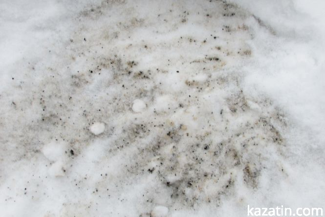

По Козятину без резинових чобіт ніяк
Фото благоустрою міста
Козятин сьогодні — Великі озера та моква у місті
Туман і задимлення у місті
Котельні в Козятині — справжнє екологічне лихо
У дворі будинку 18 по Мічуріна викиди з котельні засипали так сніг, ніби відбулося виверження лави.
Екологія Козятинщини під загрозою
На захоронення безгосподарських отрутохімікатів потрібно 4 мільйони гривень…

Нічого не бачу, нічого не чую, нічого не знаю?